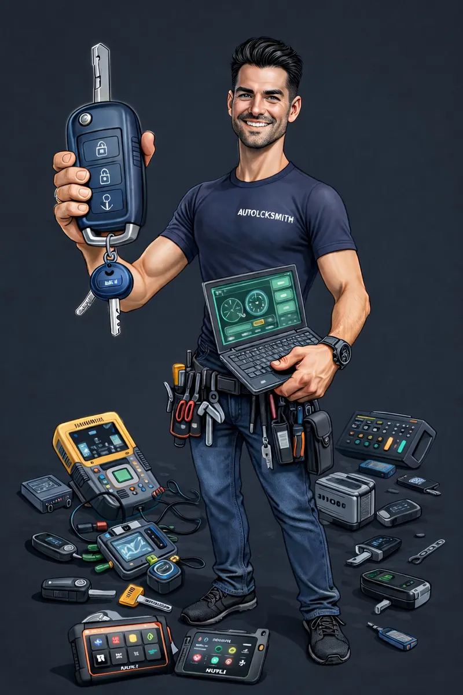

RÓLUNK

Autónyitó és autókulcsmásoló csapatunk Budapesten és környékén készenlétben áll, hogy segítsen Önnek sérülésmentesen kinyitni autóját, kulcsot másolni vagy elvesztett autókulcsot pótolni.
Helyszíni kiszállással is foglalkozunk, így elmegyünk Önhöz és helyszínen elkészítjük Önnek az autókulcsát.
A legmodernebb eszközökkel dolgozunk, ami lehetővé teszi, hogy minden típusú autót sérülésmentesen a lehető legrövidebb időn belül kinyissunk és minden típusú autóhoz kulcsot másoljunk, készítsünk.
A hívástól számítva 30 percen belül érkezünk Budapesten belül.
Autónyitás, kulcsmásolás Budapest szolgáltatásai:
- Minden típusú autó sérülésmentes nyitása
- Motorok, robogók, kamionok, kisbuszok, buszok nyitása.
- Autókulcs készítés Budapesten és környékén
- Elhagyott autókulcs pótlása
- Immobiliser programozás
- Autókulcs távirányító tanítás
- Autókulcsház elemcsere
- Pótkulcs készítése
- Kulcsmásolás
Miért minket válasszon?
- 0/24 Szolgáltatás
- 30 percen belül érkezünk
- Modern gépek minden autókulcs elkészítéséhez
- Profi csapat áll
Non-Stop rendelkezésére
AUTÓ KULCSMÁSOLÁS
AUTÓNYITÁS
Garantáljuk, hogy sérülésmentesen kinyitjuk Önnek!
Elérhetőség